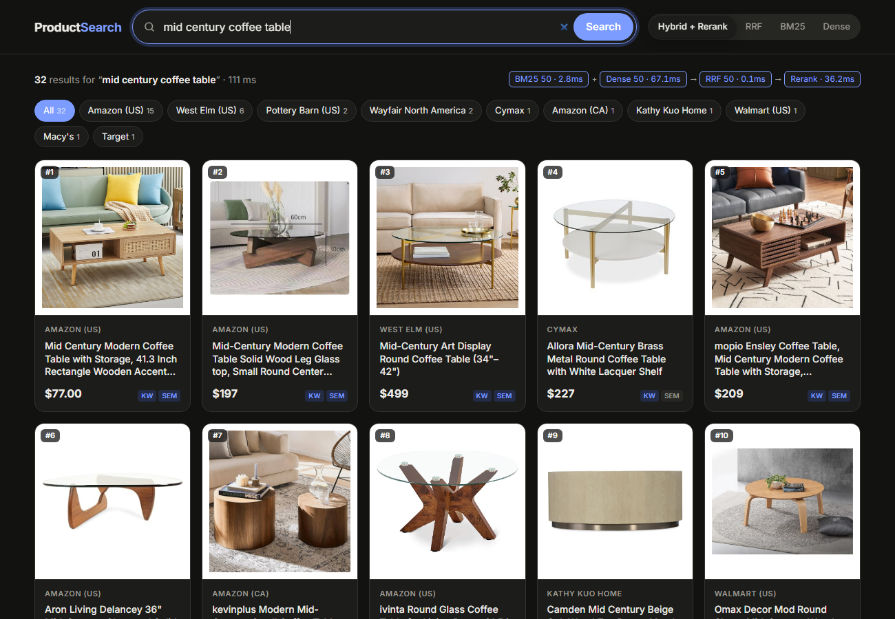
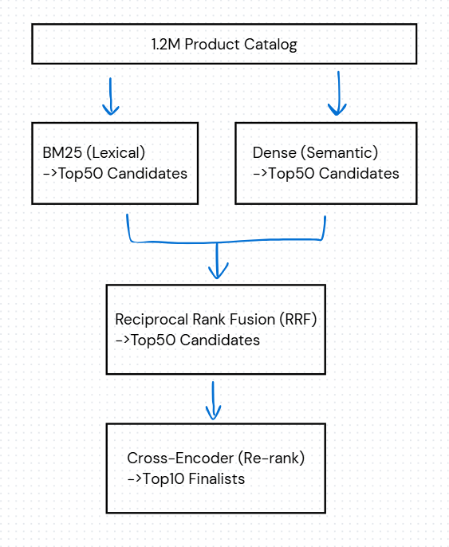

Recorded on the live deployment: search 23,807 products by description or photo, filter by AI-labeled color and Google product category, and find visually similar items. SigLIP 2 + MiniLM, served by FastAPI on Fly.io.
Short shopping queries like "aeropress" or "storage bin 52qt with lid" break single-method search: keyword matching misses synonyms, while embeddings drift toward topically related but wrong items. This project builds a four-stage retrieval pipeline where each stage fixes a different failure mode.
BM25 handles exact brands, model numbers, and specs. Dense retrieval (sentence-transformer embeddings + FAISS) catches paraphrases and category-level intent. Reciprocal Rank Fusion merges the two candidate pools, and a cross-encoder reranker jointly reads each (query, product) pair to fix the final order.
On the Amazon ESCI benchmark the full pipeline lifts Hits@1 from 0.296 to 0.374 over BM25 alone, and a Flask web UI runs the same pipeline live at about 110 ms per query on a laptop GPU.
The top result is an exact match for 26% more queries than with BM25 alone, measured on 8,955 judged ESCI queries.
Relevant products rank higher on average. The cross-encoder rerank delivered the largest single-stage gain.
End-to-end latency for all four stages over 423k products, using exact FAISS search on an RTX 5050 laptop GPU.
The embedding model is a swappable component, so the MiniLM vs. BAAI bge-small comparison changed only the encoder.
BM25 and dense retrieval each pull 50 candidates, merged with Reciprocal Rank Fusion because their failure modes barely overlap.
A cross-encoder scores each (query, title) pair jointly, demoting look-alikes such as "AeroPress Movie" below actual coffee makers.
Switch between BM25, dense, RRF, and the full pipeline on the same query, with per-stage latency and badges showing which retriever found each result.
Each product's detail panel shows its rank at every stage, making it easy to see how fusion and reranking changed the order.
Search UI with per-stage latency, store filters, and retrieval badges

Pipeline: BM25 + dense retrieval → RRF → cross-encoder rerank